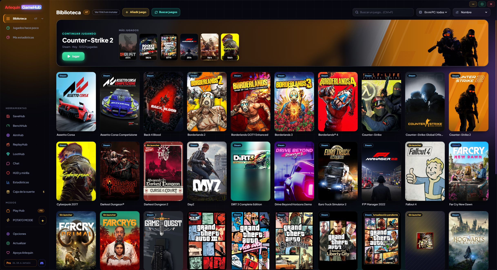

ArlequinGameHub
O launcher de todos os seus launchers: todos os seus jogos em um só lugar, seus saves sempre seguros e tudo o que você precisa enquanto joga.
Windows 10 e 11 (64 bits) · Atualiza sozinho · Todas as versões
A versão deste site recebe primeiro as novidades e melhorias: a versão da Microsoft Store pode demorar um pouco mais para recebê-las.

Um programa, tudo o que você joga
Toda a sua biblioteca
Jogos de todas as suas lojas juntos, instalados ou não, com capas e suas horas jogadas.
Saiba mais →SaveHub incluído
Faz backup dos seus saves sozinho ao fechar cada jogo. Restaure com um clique ou envie para a sua nuvem.
Saiba mais →HUD e mira
FPS, temperaturas e consumo sobre o jogo, e uma mira ajustável até um décimo de pixel.
Saiba mais →Roda no meu PC?
Veja se cada jogo vai rodar bem no seu PC, meça seu FPS real e mude as configurações gráficas.
Saiba mais →Play Hub
Tela cheia para jogar do sofá com controle de Xbox, PlayStation ou Switch.
Saiba mais →Chat integrado
Discord, Steam Chat e TeamSpeak ao lado dos seus jogos, sem abrir mais janelas.
Saiba mais →Feito com a comunidade
Banco de dados próprio de saves e FPS, e estatísticas de hardware de quem joga.
Saiba mais →POTATO MODE
Uma versão nativa ultraleve, sem navegador dentro, para PCs com poucos recursos.
Saiba mais →Encontra seus jogos sozinho
O GameHub nunca pede a senha de nenhuma loja: ele lê o que você já tem no PC e abre cada jogo com o próprio launcher.
O que um launcher comum não oferece
Existem launchers muito bons que juntam seus jogos. O GameHub vai além: além de ter tudo em um só lugar, ele cuida dos seus saves e diz como cada jogo roda no seu PC.
| Launcher de uma loja | Launchers que juntam lojas | Arlequin GameHub | |
|---|---|---|---|
| Jogos de todas as suas lojas juntos | Só os dela | Sim | Sim |
| Backup dos saves ao fechar cada jogo | Só com a nuvem dela | Com plugins | Sim, integrado |
| Saves na sua própria nuvem (Drive, OneDrive, Dropbox) | Não | Normalmente não | Sim |
| Roda no meu PC? com os requisitos de cada jogo | Na loja | Normalmente não | Sim, na sua biblioteca |
| Medir seu FPS e ver o que te limita (GPU ou CPU) | Não | Não | Sim |
| HUD e mira sobre o jogo | Não | Normalmente não | Sim |
| Mudar as configurações gráficas de cada jogo por fora | Não | Não | Em muitos jogos |
| Discord, Steam Chat e TeamSpeak dentro | Chat próprio | Normalmente não | Sim |
| Modo ultraleve para PCs fracos | Não | Normalmente não | POTATO MODE |
| Pede as senhas das suas lojas | — | Às vezes | Nunca |
O que é bom e o que ainda não
- ✓Grátis e sem anúncios. O importante nunca é pago.
- ✓Seus saves seguros sem precisar pensar. Um backup cada vez que você fecha um jogo, com proteção se um save sair danificado.
- ✓Leve. E se o seu PC tem poucos recursos, o POTATO MODE é uma janela nativa sem navegador dentro.
- ✓Seus dados, sua escolha. Tudo o que é compartilhado é anônimo e você pode desligar métrica por métrica.
- ✓Atualiza sozinho e cada versão melhora com o que os jogadores contribuem.
- !A primeira versão estável acabou de sair. Se encontrar um erro, avise a gente.
- !Ainda não é assinado. O Windows avisa na primeira vez: “Mais informações → Executar assim mesmo”.
- !Só Windows por enquanto. Linux e Steam Deck virão depois.
- !O banco de dados está começando. Em jogos menos conhecidos, talvez você precise indicar a pasta de saves à mão na primeira vez (ou o GameHub aprende enquanto você joga).
- !As estimativas de FPS precisam de jogadores. Enquanto há poucos dados de um jogo, o FPS é calculado a partir dos requisitos da Steam e é aproximado.
Vamos testar?
⬇ Download direto 🛍️ Baixar na Microsoft StoreWindows 10 e 11 (64 bits) · Grátis · Atualiza sozinho